10.20 ~ 2026.10.26
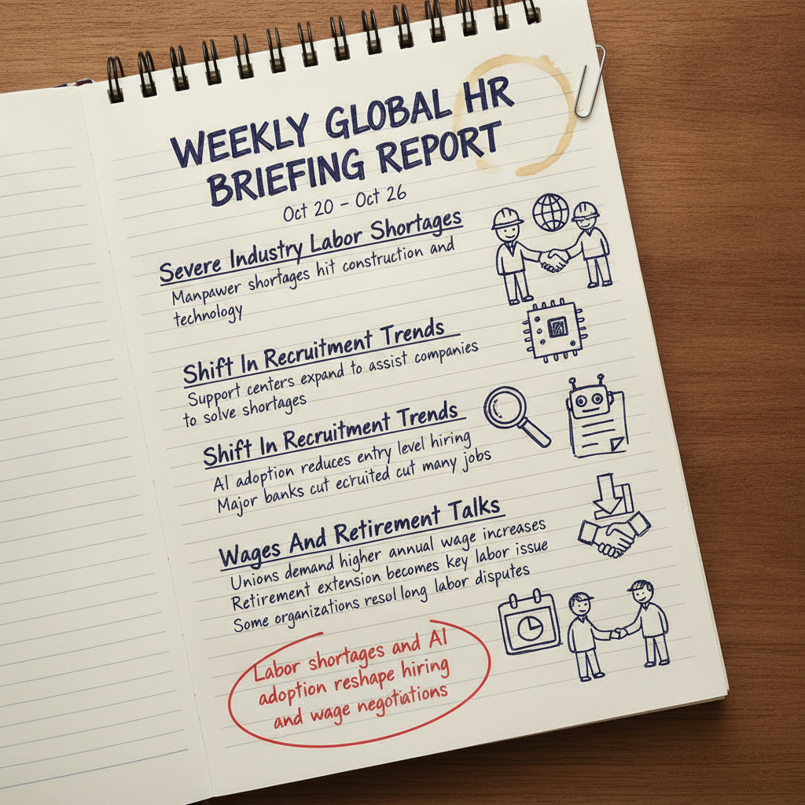
⬇️ 표지 슬라이드 다운로드⬇️ 통계 슬라이드 다운로드총평
국내외 다양한 산업 현장에서 심각한 인력난이 지속되는 가운데, 정년 연장과 임금 인상 및 성과급을 둘러싼 노사 갈등이 주요 변수로 떠오르고 있습니다. 동시에 AI 도입과 경기 영향 등으로 대기업과 금융권, 언론계 등에서 신입 채용을 축소하거나 변화를 시도하며 고용 환경의 개편이 가속화되고 있습니다.
시사점1
정년 연장 논의와 고령화가 심화함에 따라 기업은 고령 인력의 재교육 및 효율적인 재고용 제도를 선제적으로 구축해야 합니다.
시사점2
제반 산업의 인력난에 대응하기 위해 단순 채용 확대를 넘어 인력의 현장 정착과 처우 개선을 아우르는 종합적 관리가 시급합니다.
시사점3
AI 기술 도입에 따른 신입 공채 축소 등 채용 패러다임 변화에 맞춰 전문적인 면접 체계를 도입하고 적합한 AI 인재 확보 전략을 세워야 합니다.
📰 이번 주 주요 뉴스 요약 · 인포그래픽
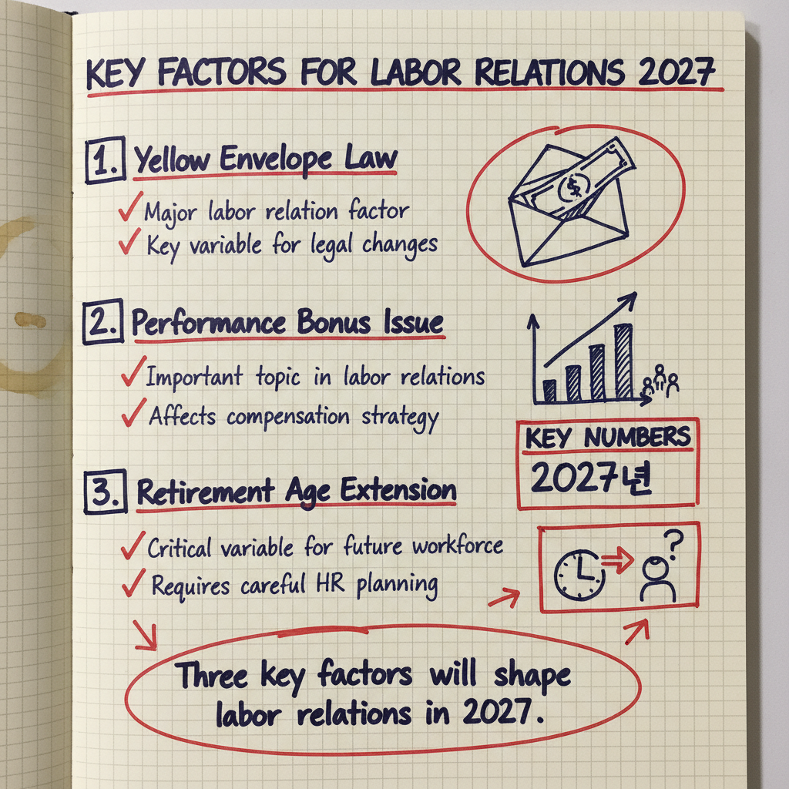
① 포항상의, 2027년 노사관계 핵심 변수 발표핵심 내용: 포항상공회의소는 2027년 노사관계의 핵심 변수로 노란봉투법, 성과급, 정년연장을 지목했습니다.
추진 배경: 포항상의는 2027년 노사관계 방향과 주요 현안을 점검하기 위해 핵심 변수들을 선정했습니다.
시사점: 향후 노사관계 대응을 위해 노란봉투법과 성과급 지급 및 정년연장 이슈에 대한 사전 대비가 필요합니다.
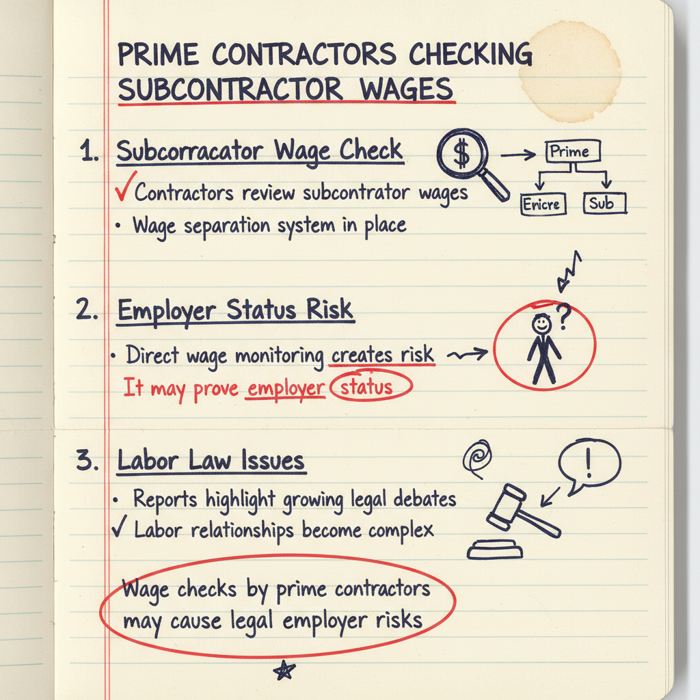
③ 임금구분지급제와 원청 사용자성 논란핵심 내용: 원청 기업이 하청 업체의 임금을 직접 확인하는 현상이 나타나고 있습니다.
추진 배경: 임금구분지급제가 다루어지면서 원청이 하청의 임금을 들여다보는 상황이 보도되었습니다.
시사점: 원청의 하청 임금 확인 행위가 원청 사용자성을 둘러싼 법적 불씨가 될 수 있다는 지적이 있습니다.
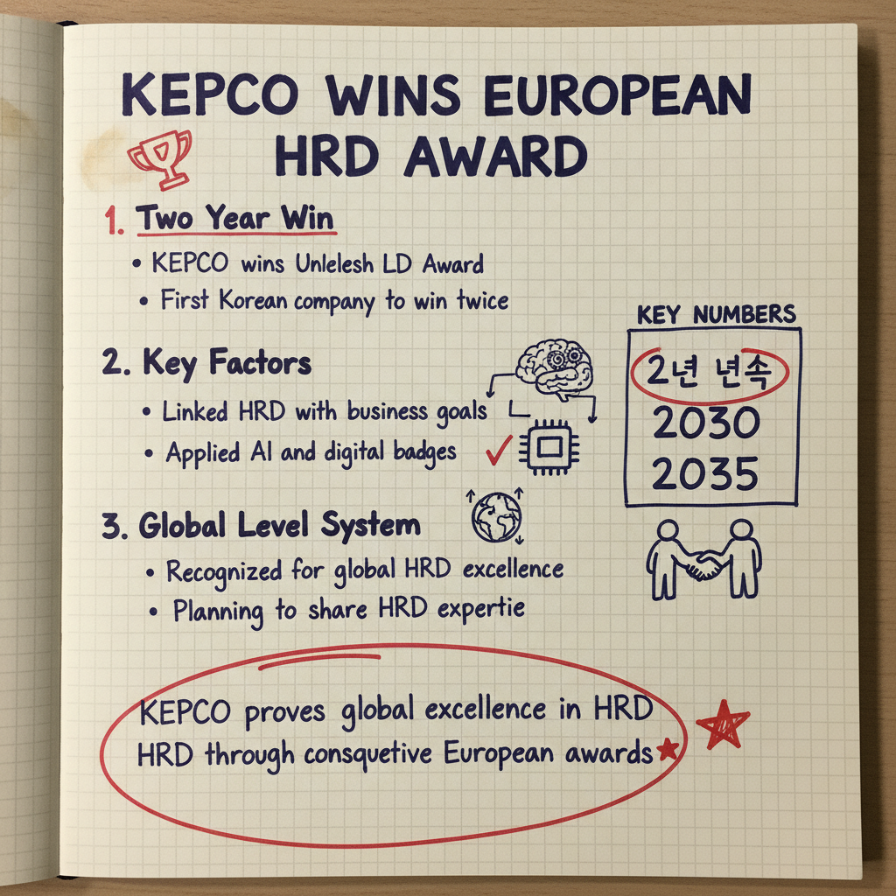
④ 한국전력, 국내 기업 최초 유럽 인재개발상 2년 연속 수상핵심 내용: 한국전력공사가 프랑스 파리에서 열린 유럽 최대 HRD 컨퍼런스에서 국내 기업 최초로 'Unleash L&D Award'를 2년 연속 수상했습니다. 경영전략 연계 HRD 운영과 데이터 기반 개인 맞춤형 교육 등에서 높은 평가를 받았습니다.
추진 배경: 한전은 '2035 중장기 경영전략'과 연계하여 AI 전환과 신성장동력 창출을 골자로 하는 '2030 HRD 중기 마스터플랜'을 수립했습니다. 직무 역량체계와 디지털 배지 등 교육성과를 인사평가 및 보직 선발에 연계하여 활용하고 있습니다.
시사점: 미국 ATD Award에 이어 유럽 권위의 인재개발상을 연속 수상하며 글로벌 최상위 수준의 인재육성 역량을 입증했습니다. 축적된 HRD 노하우 공유와 컨설팅을 통해 국내 HRD 산업 발전에도 기여할 것으로 기대됩니다.
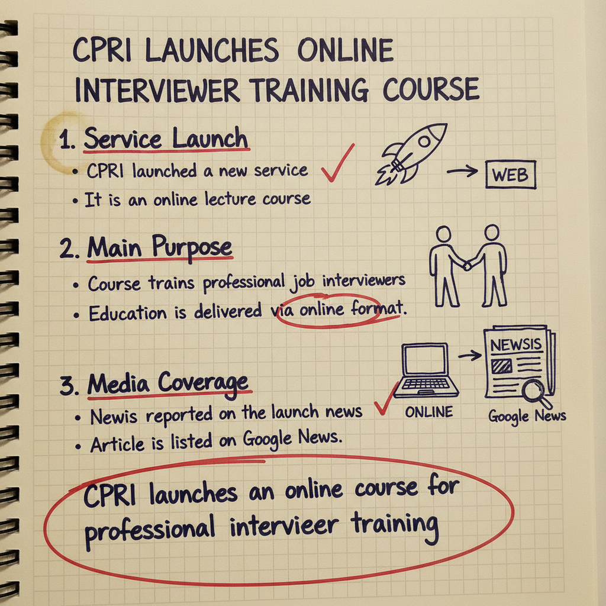
⑥ CPRI, 채용전문면접관 양성 온라인 과정 출시핵심 내용: CPRI 채용전문면접관 양성 과정을 위한 온라인 강의 서비스가 새롭게 출시되었습니다.
추진 배경: 채용 전문 면접관 교육을 체계적으로 제공하기 위해 해당 교육 과정을 온라인 강의 형태로 출시했습니다.
시사점: 언론을 통해 보도된 이번 서비스 출시로 온라인 기반의 채용 면접관 양성 환경이 조성되었습니다.
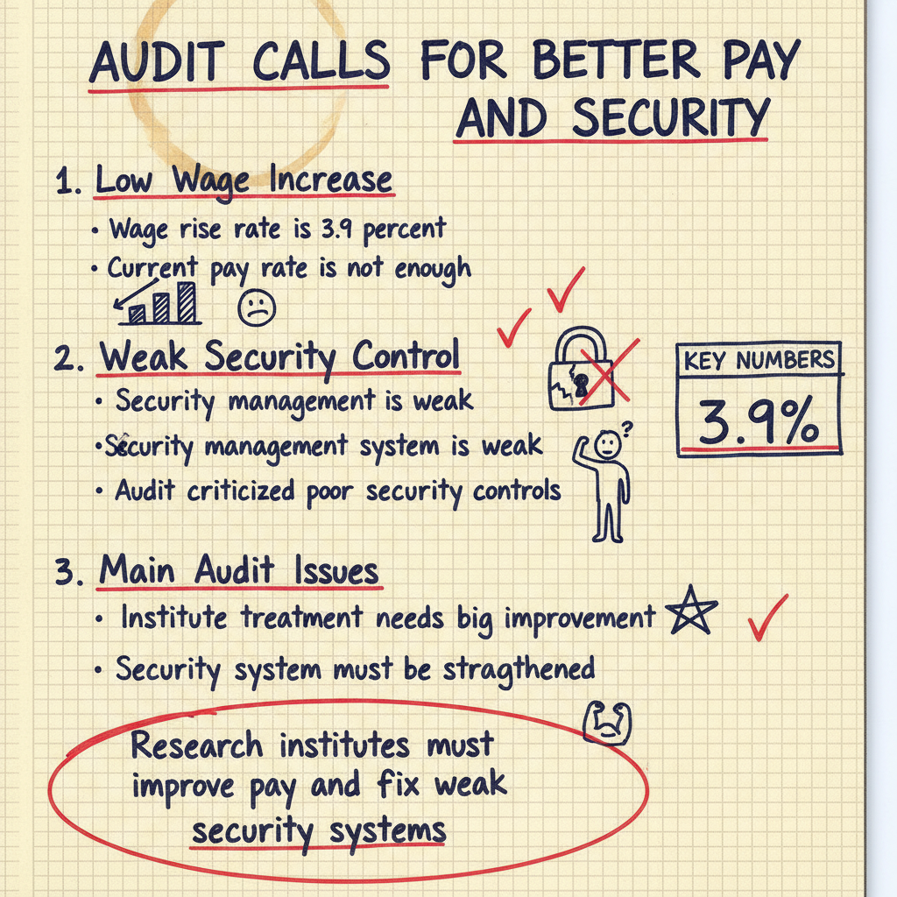
⑦ 국감서 출연연 3.9% 임금인상 부족 및 보안 미흡 지적핵심 내용: 국정감사에서 출연연의 3.9% 임금인상률이 처우 개선에 부족하다는 평가와 함께 허술한 보안관리 체계에 대한 질타가 이어졌습니다.
추진 배경: 국정감 논의 과정에서 출연연의 처우 개선 문제와 허술한 보안관리 체계가 주요 문제점으로 지목되었습니다.
시사점: 출연연 연구원의 실질적인 처우 개선 방안 마련과 엄격한 보안관리 체계 구축이 필요한 상황입니다.
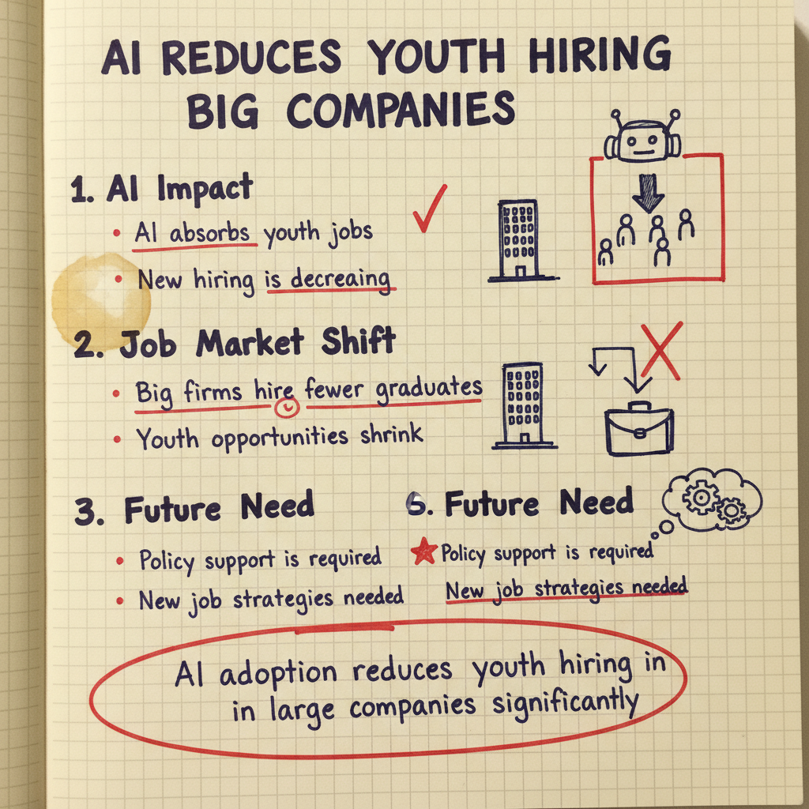
⑧ AI 확산으로 인한 대기업 청년 신규 채용 감소핵심 내용: 인공지능 확산의 여파로 대기업의 신규 채용이 줄어들고 있습니다. 청년 일자리가 AI에 흡수되면서 청년층의 채용 기회가 크게 축소되고 있습니다.
추진 배경: 청년 일자리가 AI 기술로 대체되는 구조적 변화가 시작되었습니다. 대기업의 신규 채용 감소는 청년 고용 시장 전반에 직접적인 타격을 주고 있습니다.
시사점: 기술 변화에 발맞춘 청년 인재 육성 대책 마련이 필요합니다. 청년층 고용 위기에 대응하기 위한 정부와 기업의 적극적인 지원이 시급합니다.
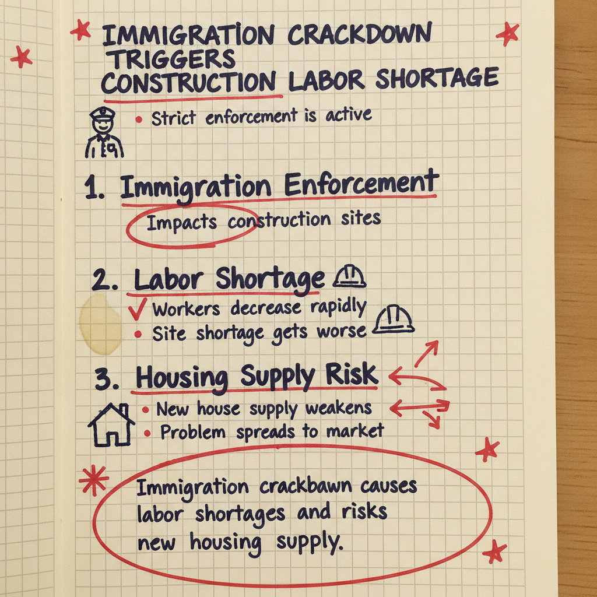
9 이민 단속 여파로 건설 인력난 심화 및 주택 공급 차질핵심 내용: 이민 단속 시행으로 건설 현장의 인력난이 심화되고 있습니다. 이러한 인력 부족은 신규 주택 공급 기반까지 흔들고 있습니다.
추진 배경: 강력한 이민 단속이 진행되면서 건설 현장의 노동력 유입이 줄어들었습니다. 단속 여파가 현장의 인력 수급 문제로 직접 연결되었습니다.
시사점: 건설 인력 부족은 단순 현장 문제를 넘어 주택 공급 차질을 유발합니다. 안정적인 인력 수급 대책과 정책적 대응이 필요합니다.
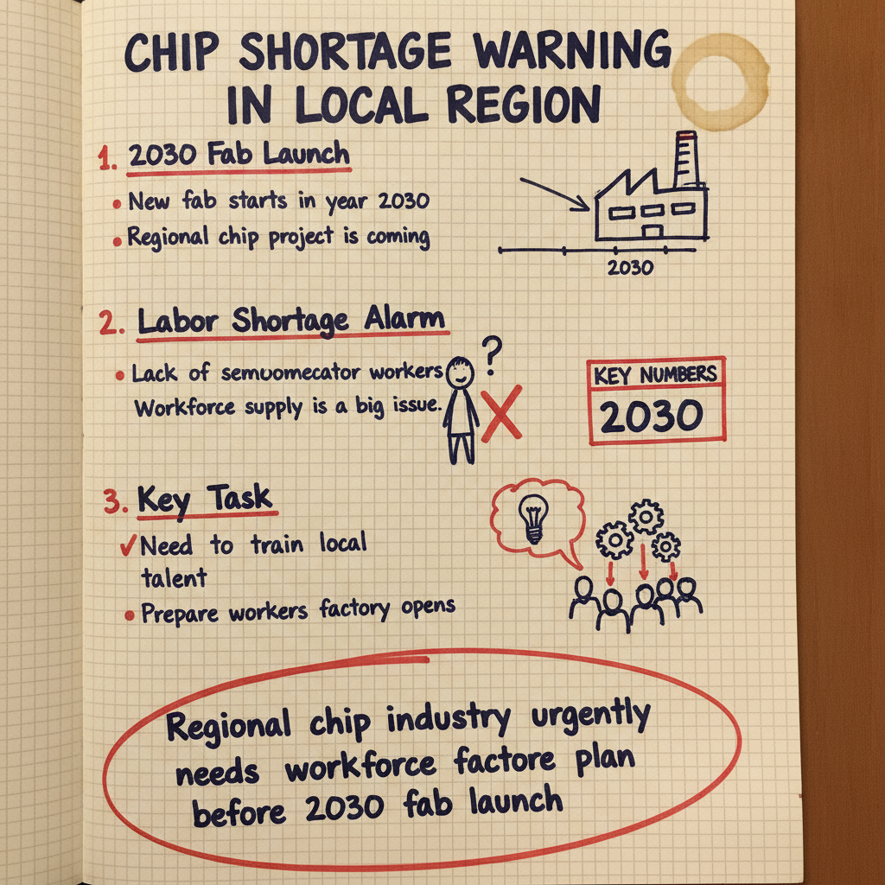
11 2030년 팹 가동 앞둔 전남광주 반도체 인력난 비상핵심 내용: 2030년 반도체 팹 가동을 앞두고 전남광주 지역의 인력 수급 문제가 심각한 과제로 떠올랐습니다.
추진 배경: 전남광주 지역 내 반도체 공장 가동 일정이 다가옴에 따라 현장 전문 인력 확보가 필요해졌습니다.
시사점: 공장 가동 전까지 안정적인 인력 수급 체계를 구축하고 관련 인재를 양성하는 대책 마련이 시급합니다.
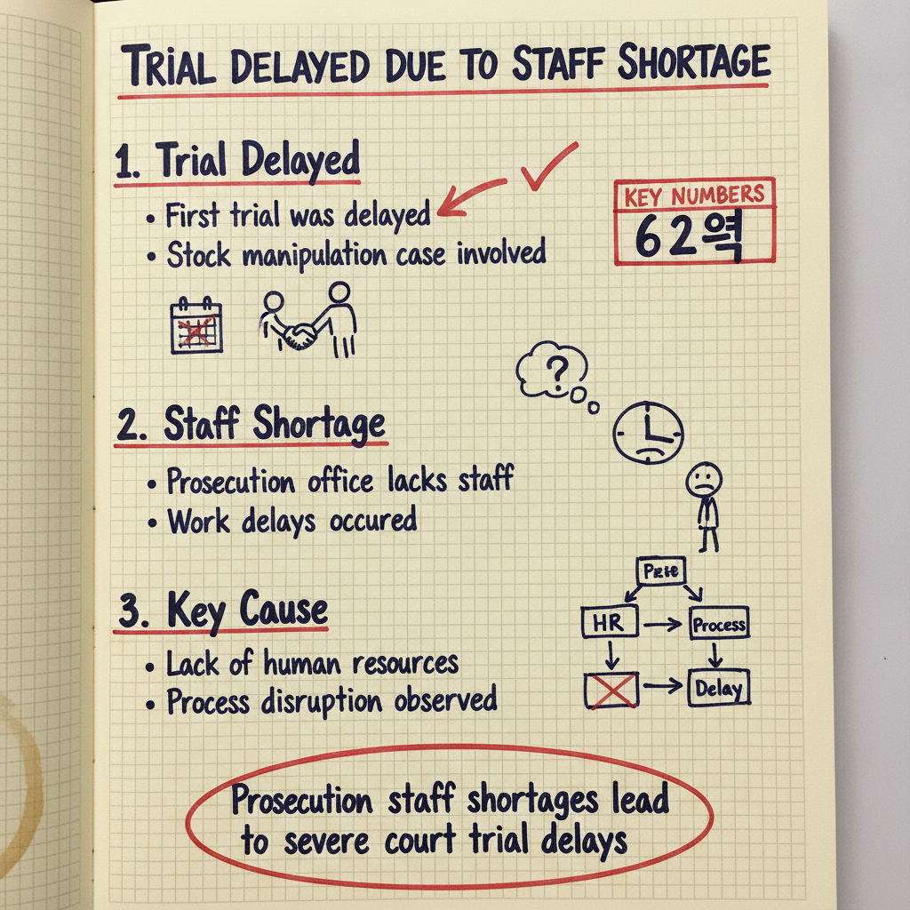
13 공소청 인력난으로 62억 시세조종 재판 지연핵심 내용: 62억 원대 시세조종 혐의를 받는 피고인의 첫 재판이 공소청의 인력난으로 인해 공전했습니다.
추진 배경: 공소청 내 심각한 인력 부족 현상이 발생하여 관련 업무 처리와 재판 진행이 지연되었습니다.
시사점: 핵심 인력 부족이 주요 형사 재판과 사법 절차 차질로 이어질 수 있음을 보여줍니다.
10.13 ~ 2026.10.19
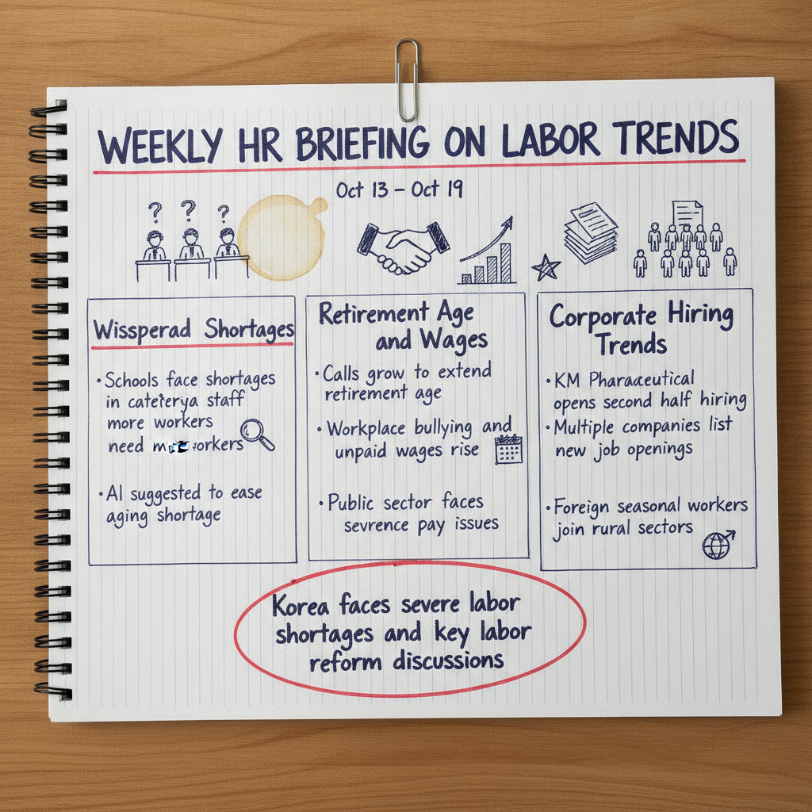
⬇️ 표지 슬라이드 다운로드⬇️ 통계 슬라이드 다운로드총평
이번 주 주요 기사에서는 노동부 장관의 정년 연장 연내 법안 처리 추진과 연금 및 임금 개혁 등 관련 이슈가 크게 주목받았습니다. 또한 급식, 의료, 보안, 농어촌 등 다양한 분야에서 심각한 인력난이 지속되는 가운데 외국인 채용이나 AI 기술 활용 등의 해법이 논의되었습니다. 아울러 직장 내 괴롭힘, 임금 체불, 부적절한 채용 관행 등 노동 현장의 문제점과 규제 관련 지적도 연이어 제기되었습니다.
시사점1
정년 연장 입법이 연내 추진되는 흐름에 맞춰 기업은 임금 개혁 및 연금 대응 전략 등 중장기적인 인력 운용 대책을 조속히 수립해야 합니다.
시사점2
다양한 산업과 직무에서 인력난이 심화하고 있으므로 AI 등 기술 도입이나 외국인 인력 활용 등 다각적인 인력 확보 방안을 검토해야 합니다.
시사점3
직장 내 괴롭힘, 임금 체불, 퇴직금 미지급 등 노무 리스크에 대한 주의가 요구되므로 인사 담당자는 공정한 채용과 준법적인 노동 환경 조성을 철저히 관리해야 합니다.
📰 이번 주 주요 뉴스 요약 · 인포그래픽
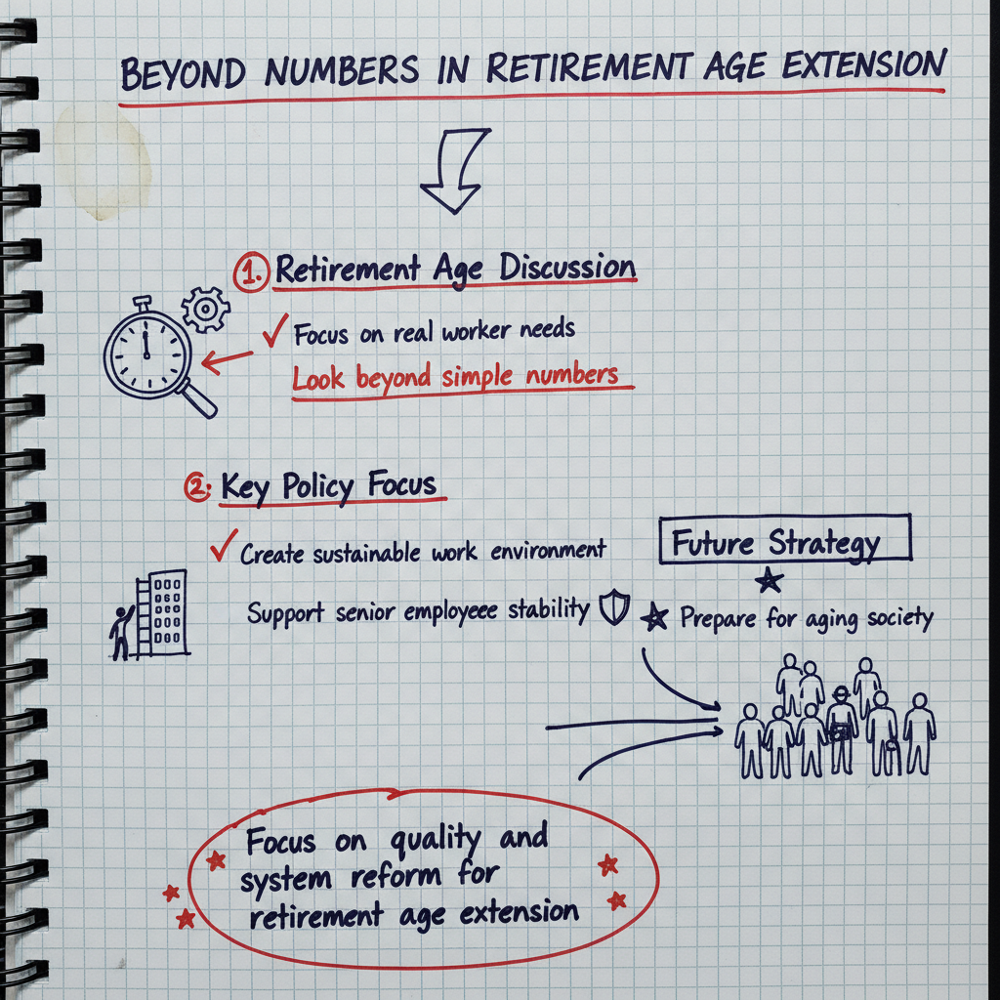
① 정년 연장 논의에서 수치보다 중요한 요소핵심 내용: 정년 연장 논의에서는 단순한 연령 수치보다 실질적인 제도 개선과 내실이 더 중요합니다.
추진 배경: 고령화 사회 진입에 따라 사회적 합의를 바탕으로 한 정년 연장의 필요성이 지속적으로 제기되고 있습니다.
시사점: 숫자에 집중하기보다 지속 가능한 노동 환경과 고용 안정을 위한 종합적인 접근이 필요합니다.
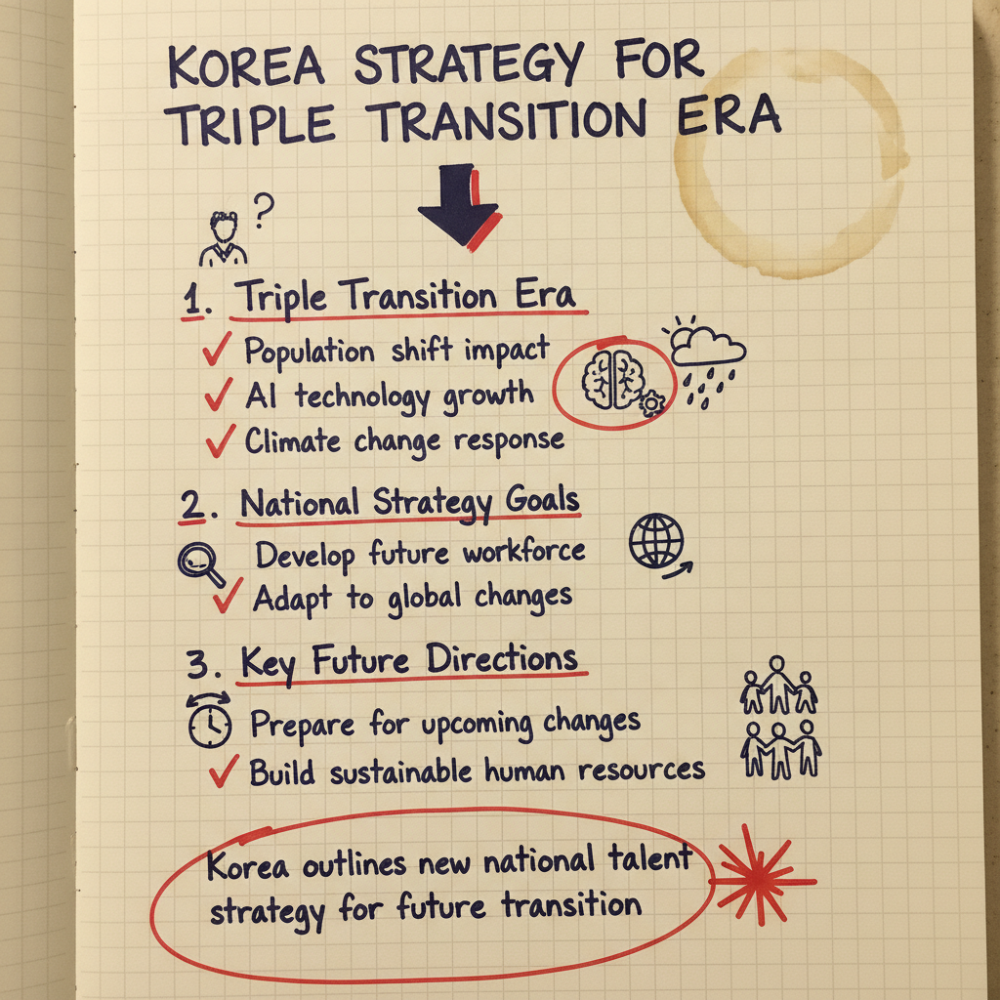
③ 직능연 삼중전환 시대 국가인재개발 전략 제시핵심 내용: 한국직업능력연구원이 인구와 인공지능 및 기후 변화에 대응하기 위한 국가인재개발 전략을 제시하였습니다.
추진 배경: 급격한 인구 구조 변화와 인공지능 발전, 기후 위기라는 삼중전환 환경에 맞춘 인재 양성이 필요해졌습니다.
시사점: 변화하는 시대적 요구에 대응하여 국가 차원의 체계적인 인재 개발 방향을 확립해야 합니다.
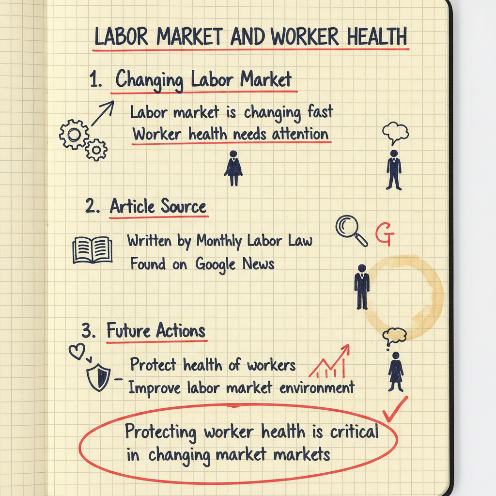
④ 노동시장 변화와 노동자 건강 문제핵심 내용: 본 기사는 월간노동법률에서 작성하였으며 녹아내린 노동시장과 노동자의 건강 문제를 다루었습니다.
추진 배경: 급변하고 불안정한 노동시장 환경 속에서 노동자가 직면한 건강상의 이슈를 조명하고자 작성되었습니다.
시사점: 변화하는 노동환경에 발맞추어 노동자의 건강권을 보호하고 안정적인 환경을 조성해야 합니다.
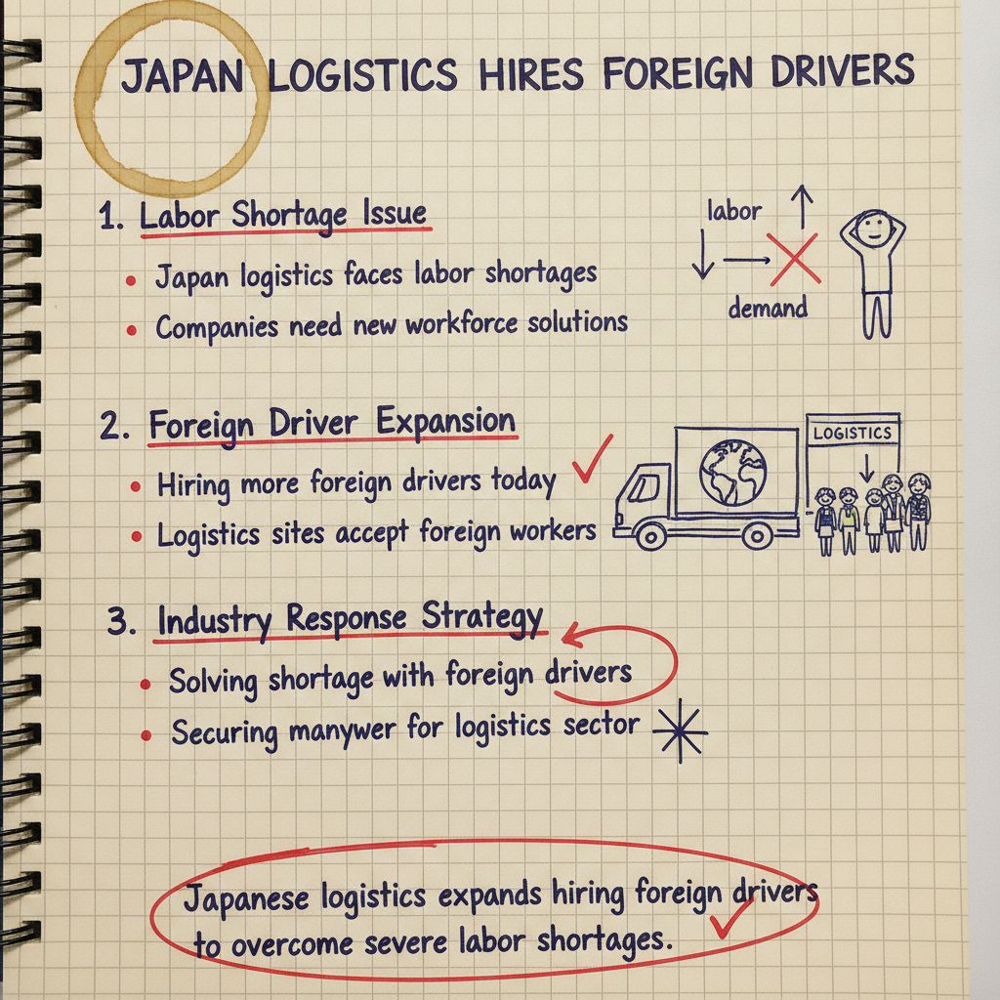
⑥ 일본 물류업계, 인력난 해소 위해 외국인 기사 채용 확대핵심 내용: 일본 물류업계가 인력난을 타개하기 위해 외국인 기사 채용을 확대하고 있습니다. 물류 현장에서 외국인 인력 활용이 적극적으로 추진되고 있습니다.
추진 배경: 현재 일본 물류 현장은 심각한 인력 부족 문제에 직면해 있습니다. 물류업계는 이러한 인력난을 해결하기 위한 방안을 다각도로 모색 중입니다.
시사점: 인력 부족 문제 해결을 위해 외국인 기사를 적극 도입하는 사례입니다. 국내 관련 산업의 인력난 대응 방안 마련에도 참고할 필요가 있습니다.
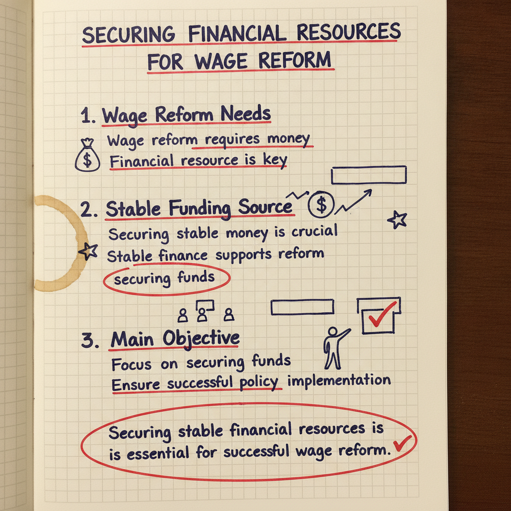
9 성공적인 임금 개혁을 위한 안정적 재정 자원 확보핵심 내용: 성공적인 임금 개혁을 추진하기 위해 안정적인 재정 자원을 확보하는 것이 핵심 과제로 제시되었습니다.
추진 배경: 임금 개혁의 원활한 진행과 효과적인 정착을 위해서는 무엇보다 지속 가능한 재원 마련이 필수적입니다.
시사점: 충분하고 안정적인 재정 기반이 뒷받침되어야 실질적이고 성공적인 임금 개혁을 이룰 수 있습니다.
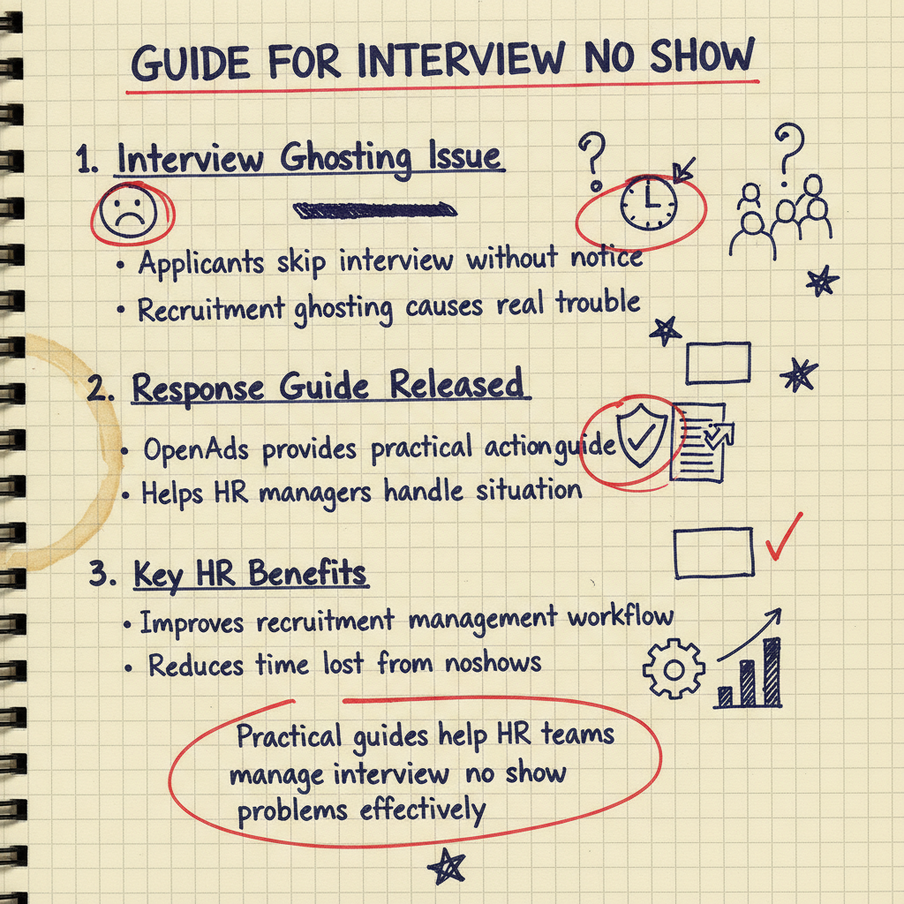
12 오픈애즈, 면접 노쇼 대응 가이드 제시핵심 내용: 오픈애즈가 면접에 나타나지 않는 채용 고스팅 지원자로 어려움을 겪는 인사 담당자를 위한 대응 가이드를 제시했습니다.
추진 배경: 채용 과정에서 면접 노쇼 현상이 주요 이슈로 떠오름에 따라 인사 담당자의 적절한 상황 대응이 필요해졌습니다.
시사점: 제시된 가이드를 활용하면 채용 고스팅 상황에 체계적으로 대처하고 채용 혼란을 줄일 수 있습니다.
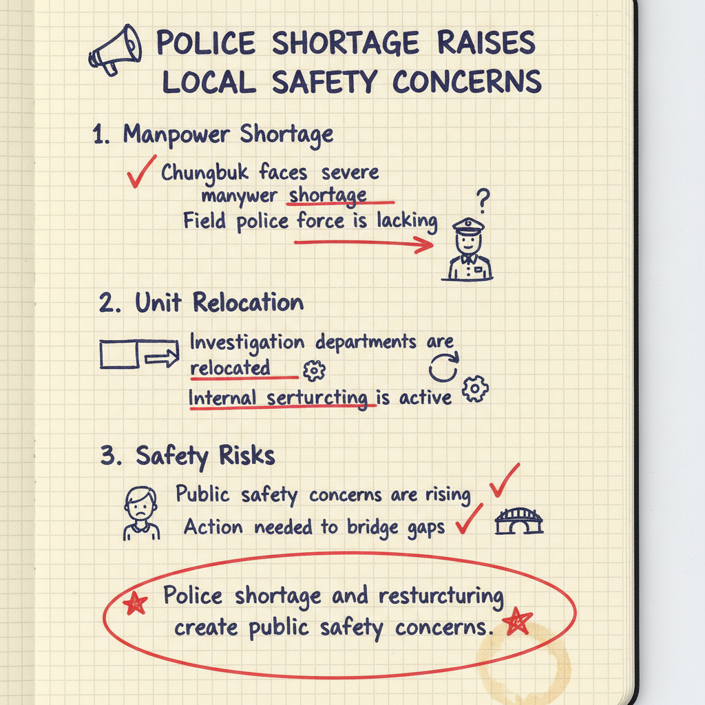
13 충북 경찰 인력난과 수사부서 재배치로 치안 공백 우려핵심 내용: 충북 지역에서 인력난과 수사부서 재배치가 동시에 진행되면서 현장 치안 공백에 대한 우려가 커지고 있습니다.
추진 배경: 지역 내 인력 부족 현상이 발생하는 상황에서 수사 조직의 재배치가 함께 이루어졌습니다.
시사점: 조직 재배치 과정에서 지역 주민들의 안전을 지킬 수 있도록 현장 치안 유지 대책 마련이 필요합니다.
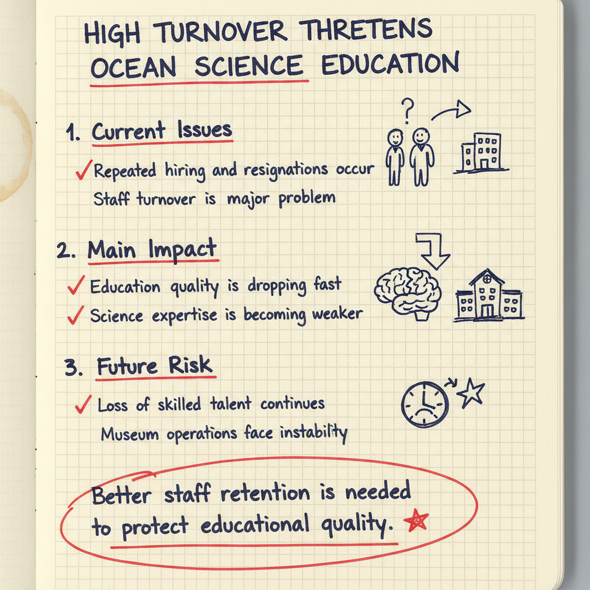
14 울진해양과학관의 채용 및 퇴직 악순환과 전문성 약화 우려핵심 내용: 울진해양과학관에서 채용과 퇴직이 반복되는 악순환이 발생하여 기관 운영의 주요 문제로 지적되고 있습니다.
추진 배경: 지속적인 인력 변동으로 인해 해양과학교육 분야의 전문성이 약화될 수 있다는 우려가 제기되었습니다.
시사점: 안정적인 교육 서비스 제공을 위해 직원 이탈을 방지하고 전문성을 유지할 수 있는 인력 관리 대책이 필요합니다.
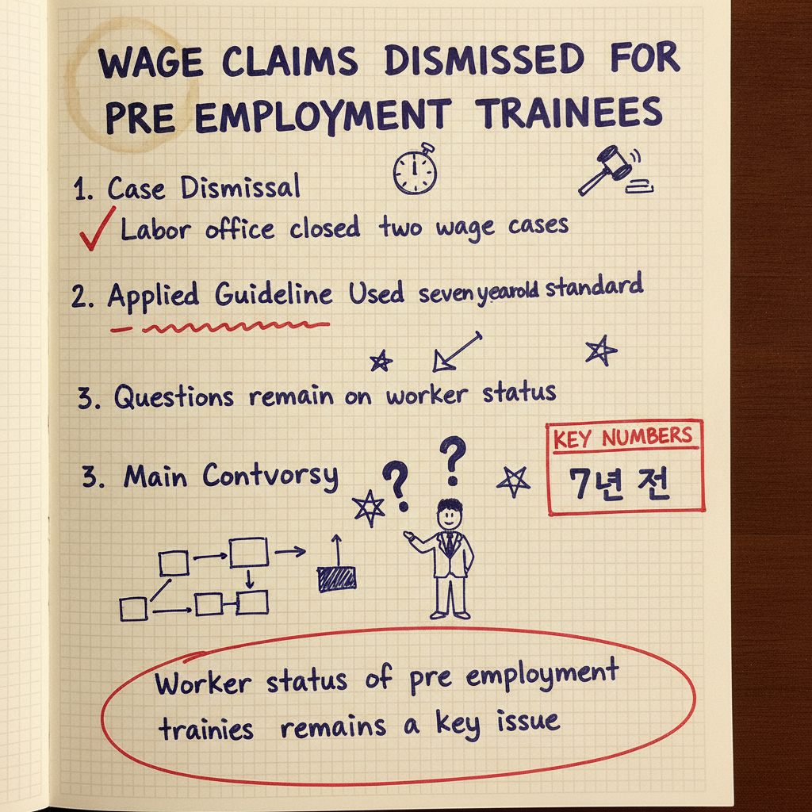
16 광주노동청의 채용 전 교육생 임금 진정 종결과 근로자성 논란핵심 내용: 광주지방고용노동청이 채용 전 교육생 관련 임금 진정 2건을 종결했습니다. 이번 처리는 7년 전 행정 해석을 기준으로 이루어졌습니다.
추진 배경: 노동청은 7년 전에 이루어진 기존 해석 기준을 적용하여 해당 진정건들을 종결 처리했습니다.
시사점: 채용 전 교육생이 법적 근로자에 해당하는지에 대한 의문과 자격 논란이 다시 제기되고 있습니다.
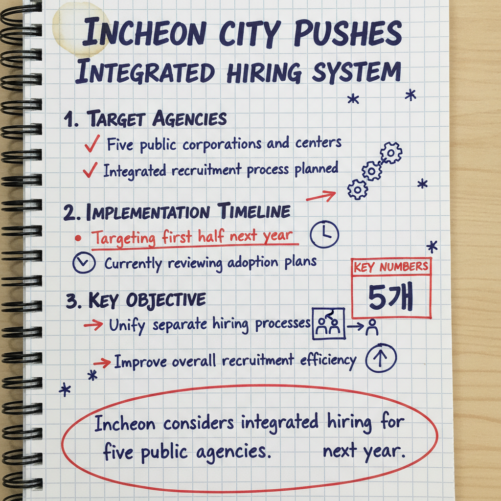
18 인천시, 5개 공사·공단 통합채용 추진핵심 내용: 인천시가 관할 5개 공사 및 공단을 대상으로 통합채용 도입을 추진하고 있습니다. 내년 상반기 중 제도 도입을 검토할 예정입니다.
추진 배경: 관할 공기업과 공단의 채용 절차를 통합하여 운영하기 위해 이번 정책을 마련했습니다.
시사점: 통합채용을 통해 공공기관 채용의 공정성을 높이고 효율적인 인재 채용이 가능해질 것으로 보입니다.
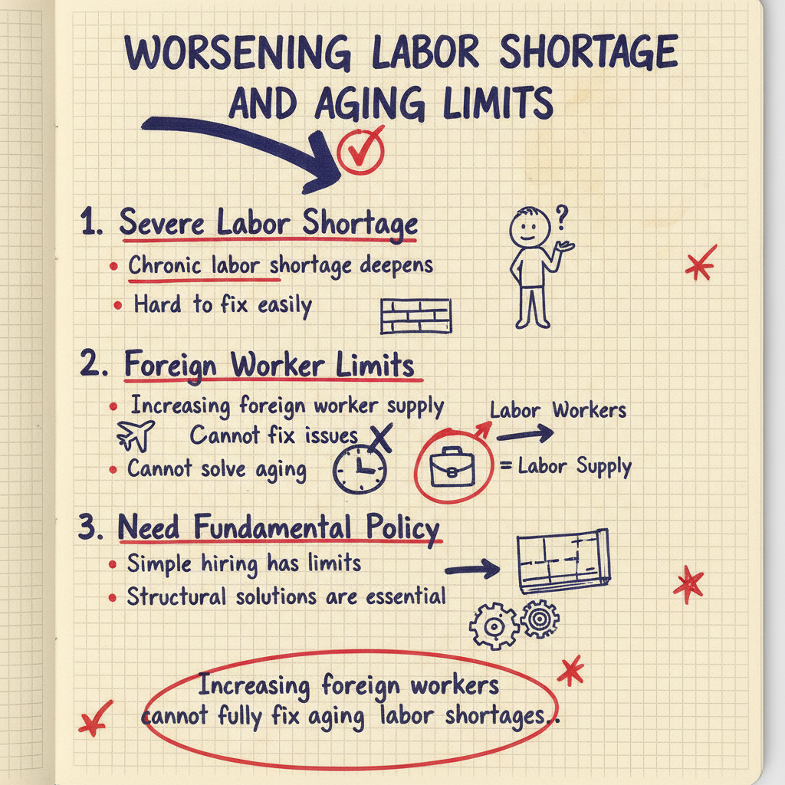
19 외국인 확대에도 심화되는 인력난과 고령화 문제핵심 내용: 외국인 인력을 확대하더라도 고령화로 인한 구조적 인력난을 해결하는 데에는 한계가 있습니다.
추진 배경: 산업 현장의 인력 부족 현상이 장기화되면서 단기간에 해결하기 어려운 고질적인 문제로 자리 잡고 있습니다.
시사점: 단순한 외국인 유입을 넘어 인구 고령화 사회에 맞춘 근본적인 노동 시장 대책 마련이 필요합니다.
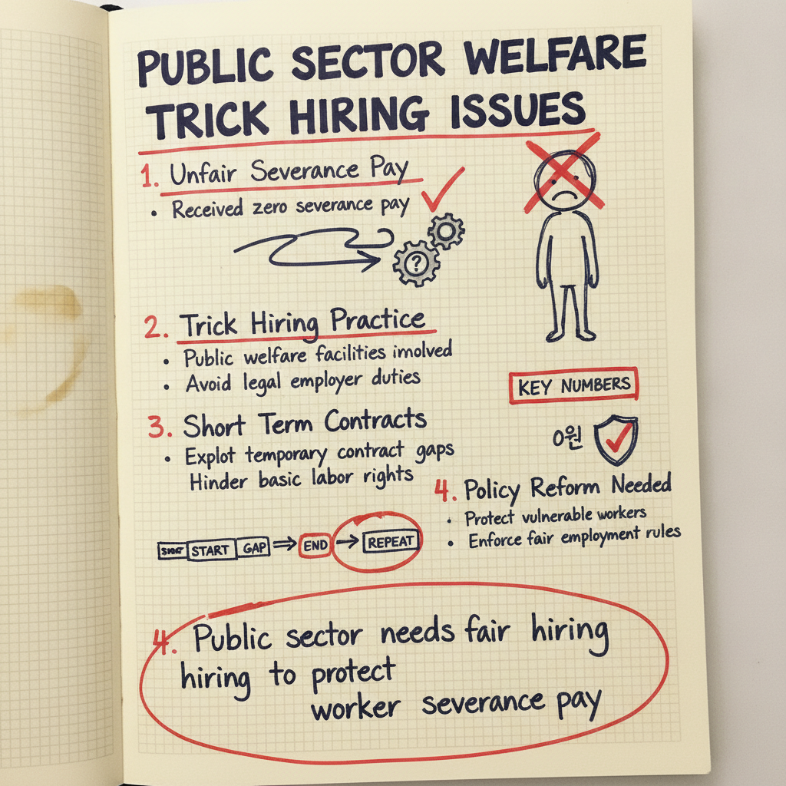
20 공공부문 복지시설의 꼼수 채용과 퇴직금 미지급 문제핵심 내용: 공공부문 복지시설에서 수년간 근무했음에도 꼼수 채용으로 인해 퇴직금을 전혀 받지 못하는 사례가 발생했습니다.
추진 배경: 공공기관 및 관련 시설이 퇴직금 지급 부담을 줄이기 위해 단기 계약 형태를 악용하고 있다는 지적이 제기되었습니다.
시사점: 공공부문부터 솔선수범하여 비정규직 및 단기 근로자의 정당한 권리를 보장하고 관련 제도를 개선해야 합니다.
10.11 ~ 2026.10.17
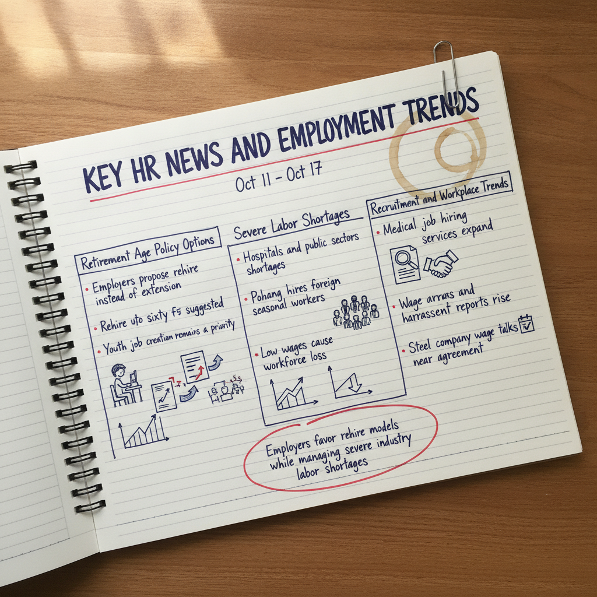
⬇️ 표지 슬라이드 다운로드⬇️ 통계 슬라이드 다운로드총평
이번 주 HR 및 노동 분야에서는 일률적인 법정 정년 연장 대신 일본식 단계적 재고용 제도를 도입해야 한다는 경영계의 제안이 주요 화두로 떠올랐습니다. 동시에 의료, 공공, 교육, 농어업 등 다양한 현장에서 심화되는 인력난 해소 방안에 대한 논의가 활발히 이어졌습니다. 또한 직장 내 괴롭힘, 임금 체불, 퇴직금 회피성 채용 등 노동법 준수와 고용 환경 개선에 대한 경각심도 부각되었습니다.
시사점1
청년 고용과의 상생 및 고령자 고용 유지를 위해 60세 정년 유지 후 65세까지 재고용하는 형태의 유연한 고용 제도 도입을 검토할 필요가 있습니다.
시사점2
심화하는 현장 인력난에 대응하기 위해 외국인 인력 활용 확대와 AI 등 신기술을 통한 인력 보완 전략을 적극 수립해야 합니다.
시사점3
직장 내 괴롭힘, 임금 체불, 퇴직금 미지급과 같은 노동법 위반 리스크를 사전 점검하고 공정한 채용 및 인사 관리 체계를 정비해야 합니다.
📰 이번 주 주요 뉴스 요약 · 인포그래픽
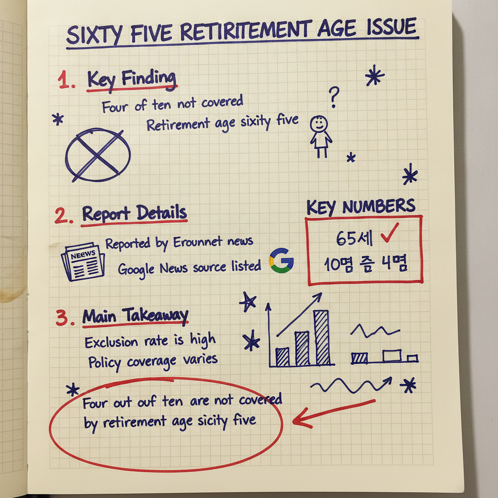
① 정년 65세 적용의 사각지대 현황핵심 내용: 정년 65세 적용과 관련하여 10명 중 4명은 해당 사항이 없는 것으로 조사되었습니다.
추진 배경: 정년 65세 적용 논의에 따라 실제 대상에서 제외되는 인원의 비율을 확인하고자 작성되었습니다.
시사점: 정년 연장 정책 추진 시 정년제 혜택을 받지 못하는 사각지대 노동자에 대한 고려가 필요합니다.
① 정년 65세 적용 대상 및 제외 비율 분석핵심 내용: 정년 65세 적용과 관련하여 10명 중 4명은 해당 사항이 없다는 조사 내용이 보도되었습니다.
추진 배경: 이로운넷은 정년 65세 규정의 적용을 받지 못하는 인원 비율에 주목하여 기사를 작성했습니다.
시사점: 정년 연장 논의 시 적용에서 제외되는 대상이 상당수 존재한다는 점을 유의해야 합니다.
② 병원잡, 병원 및 의료기관 구인구직 채용 정보 서비스 확대핵심 내용: 병원잡이 병원 및 의료기관을 대상으로 한 구인구직 채용 정보 서비스를 확대했습니다. 이를 통해 의료 분야의 채용 정보 제공이 더욱 강화되었습니다.
추진 배경: 의료기관의 채용 정보 수요에 대응하고 구인구직 정보 접근성을 높이기 위해 서비스를 확장했습니다.
시사점: 의료기관과 구직자 간의 매칭 효율성이 높아지고 전문 채용 정보 접근이 용이해질 것으로 전망됩니다.
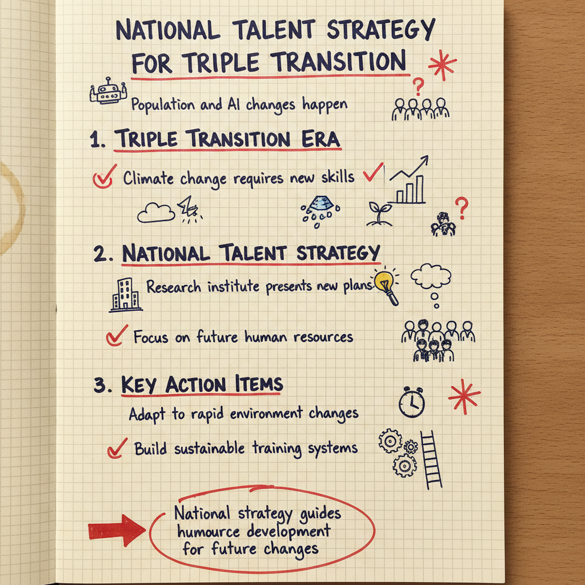
③ 직능연, 삼중전환 시대 국가인재개발 전략 제시핵심 내용: 한국직업능력연구원이 인구, 인공지능, 기후 변화에 대응하기 위한 국가인재개발 전략을 발표했습니다. 시대적 변화에 발맞추어 국가 차원의 새로운 인재 육성 방향을 마련했습니다.
추진 배경: 인구 구조 변화와 인공지능 발전, 기후 위기라는 삼중전환 환경에 선제적으로 대응할 필요성이 커졌습니다. 미래 환경 변화를 종합적으로 고려한 국가적 대비책이 요구되었습니다.
시사점: 급변하는 시대적 환경에 적합한 인재 양성이 핵심 과제로 떠올랐습니다. 국가 차원의 지속적인 인재개발 전략 추진이 필요합니다.
③ 직능연 삼중전환 시대 국가인재개발 전략 제시핵심 내용: 한국직업능력연구원이 인구, 인공지능, 기후 변화에 대응하기 위한 국가인재개발 전략을 발표했습니다. 시대적 변화에 맞추어 국가 차원의 구체적인 인재 육성 방향을 도출했습니다.
추진 배경: 인구 구조 변화와 인공지능 기술 발전, 기후 위기라는 삼중전환 환경에 직면했습니다. 이에 대응하여 국가 차원의 새로운 인재개발 대응 방안 마련이 필요해졌습니다.
시사점: 급변하는 경영 환경에 대응하기 위해 기업도 유연한 인재 육성 전략을 수립해야 합니다. 미래 경쟁력 확보를 위해 국가 차원의 인재개발 방향을 교육 및 채용에 반영할 필요가 있습니다.
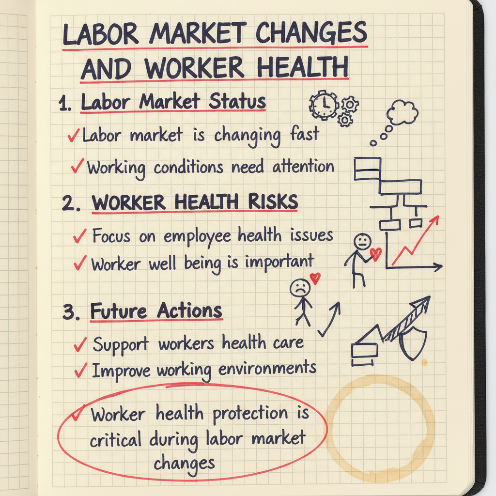
④ 노동시장 변화와 노동자 건강 실태 분석핵심 내용: 본 기사는 변화하는 노동시장의 현황과 노동자의 건강 문제를 함께 다루었습니다.
추진 배경: 월간노동법률을 통해 노동환경 변화가 근로자 건강에 미치는 영향이 조명되었습니다.
시사점: 변화하는 노동시장 속에서 근로자의 건강을 보호하기 위한 관심과 지원이 필요합니다.
④ 위기의 노동시장과 노동자 건강 보호 방안핵심 내용: 본 기사는 최근 침체된 노동시장 환경과 이로 인해 위협받는 노동자의 건강 문제를 다루고 있습니다.
추진 배경: 월간노동법률은 노동시장의 불안정성이 노동자 생존권과 건강에 미치는 영향에 주목하여 기사를 작성했습니다.
시사점: 변화하는 노동환경 속에서 기업과 사회는 근로자의 건강권을 보호하기 위한 대책을 마련해야 합니다.
⑤ KAI, 모로코 에어쇼서 다자 협약 체결 및 노후 기종 대체 추진핵심 내용: KAI가 모로코 에어쇼 현장에서 다자 협약을 진행했습니다. 이를 통해 노후화된 알파젯 대체를 추진하고 있습니다.
추진 배경: 이번 협약은 모로코 에어쇼 현장에서 직접 이루어졌습니다. 노후 알파젯 교체 수요를 겨냥한 행보입니다.
시사점: 해외 현지에서 다자간 협력이 구체화되었습니다. 향후 노후 기종 대체 시장 진출이 기대됩니다.
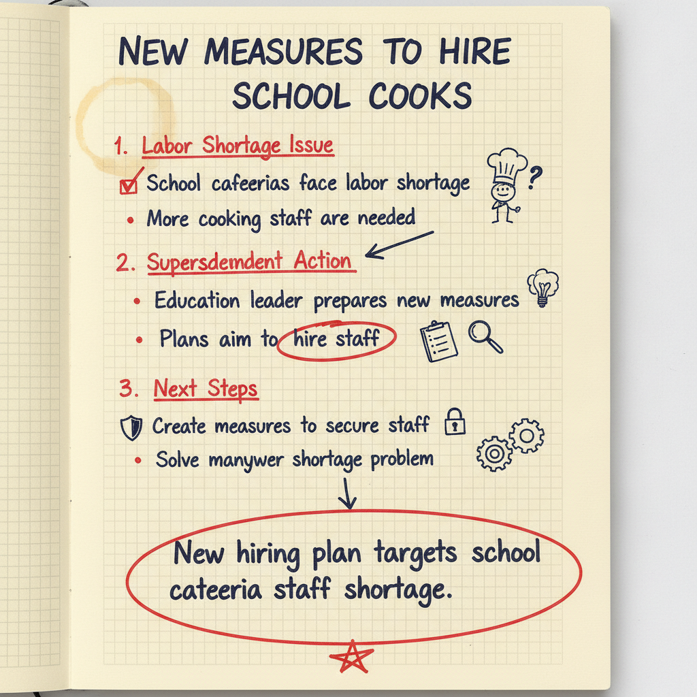
⑥ 학교급식 인력난 해소를 위한 조리실무사 채용 대책 추진핵심 내용: 천호성 교육감이 학교급식 현장의 인력난을 해결하기 위해 조리실무사 채용 대책 마련에 나섰습니다. 조리실무사 인력 확보를 위한 세부 추진 방안이 마련될 예정입니다.
추진 배경: 현재 학교급식 현장에서 조리실무사 인력 부족 문제가 지속해서 발생하고 있습니다. 이에 따라 급식 운영 차질을 막기 위한 대응책 수립이 시급해졌습니다.
시사점: 실효성 있는 조리실무사 채용 대책이 마련되면 급식 현장의 인력난이 완화될 것으로 기대됩니다. 안정적인 급식 환경 조성을 위한 지속적인 관리가 필요합니다.
⑥ 학교급식 인력난 해소를 위한 조리실무사 채용 대책 추진핵심 내용: 천호성 교육감이 학교급식 현장의 인력난을 해결하기 위해 조리실무사 채용 대책 마련에 나섰습니다.
추진 배경: 학교급식 현장에서 조리실무사 인력 부족 문제가 지속적으로 발생하고 있습니다.
시사점: 실효성 있는 채용 대책 수립을 통해 급식 현장의 인력난을 완화하고 안정적인 운영을 도모해야 합니다.
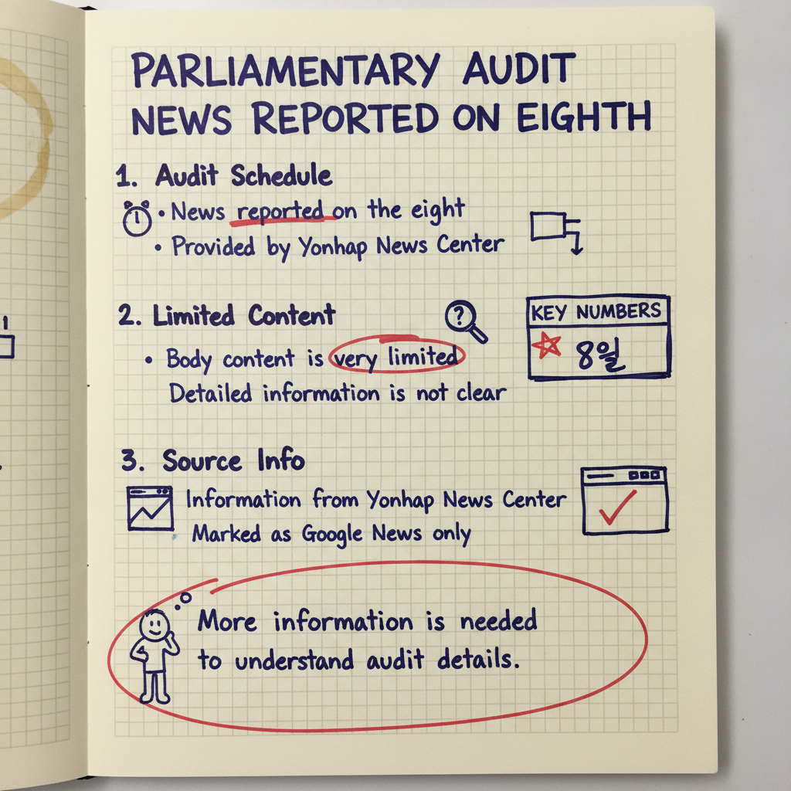
⑦ 8일 국정감사 진행 소식 및 제한된 관련 정보핵심 내용: 8일에 진행되는 국정감사 관련 소식이 전달되었습니다. 제공된 본문 내용이 제한적이어서 세부 정보는 파악하기 어렵습니다.
추진 배경: 국정감사 일정에 맞춰 연합뉴스 한민족센터를 통해 관련 소식이 제공되었습니다. 본문 영역에는 구체적인 내용 대신 출처 표기만 존재합니다.
시사점: 제공된 자료만으로는 국정감사의 세부 안건을 파악하는 데 한계가 있습니다. 정확한 현황 파악을 위해서는 추가 보도 확인이 필요합니다.
⑦ 10월 8일 국정감사 일정 관련 소식 안내핵심 내용: 8일에 진행되는 국정감사 소식이 연합뉴스 한민족센터를 통해 전달되었습니다.
추진 배경: 국정감사 관련 주요 일정을 언론 보도를 통해 공유하기 위해 수집되었습니다.
시사점: 제공된 본문 내용이 매우 제한적이어서 세부적인 안건 파악이 어렵습니다.
⑧ 일본 물류업계, 인력난 해소 위해 외국인 기사 채용 확대핵심 내용: 일본 물류업계가 현장의 심각한 인력난을 극복하기 위해 외국인 운전기사 채용을 확대하고 있습니다.
추진 배경: 물류 현장의 노동력 부족 현상이 심화되면서 기존 인력만으로는 운송 업무 대응에 한계가 발생했습니다.
시사점: 인력 부족을 겪는 국내 물류 및 운송 분야에서도 외국인 인력 활용 방안을 적극 검토할 필요가 있습니다.
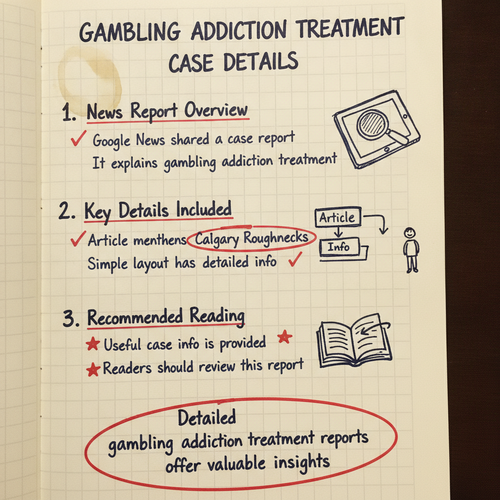
9 구글 뉴스에 공개된 도박 중독 치료 세부 사례핵심 내용: 구글 뉴스를 통해 Calgary Roughnecks 명칭이 포함된 도박 중독 치료 사례가 구체적으로 공개되었습니다. 화면 구성은 단순하지만 치료 사례에 관한 세부 설명이 충실히 기술되어 있습니다.
추진 배경: 도박 중독 치료에 관한 세부 사례 정보를 전달하기 위해 구글 뉴스를 출처로 관련 소식이 공유되었습니다.
시사점: 화면 구성이 단순해 보일 수 있으나 중요한 치료 사례 정보가 담겨 있으므로 유의하여 확인해야 합니다.
9 Google News 도박 중독 치료 사례 보도핵심 내용: Google News에 도박 중독 치료 사례가 세부적으로 기술된 기사가 올라왔습니다. 기사 제목에는 Calgary Roughnecks라는 명칭이 포함되어 있습니다.
추진 배경: 본 소식은 Google News를 출처로 하여 도박 중독 치료 사례 관련 정보를 전달하고자 작성되었습니다.
시사점: 화면 구성이 단순하더라도 세부적인 도박 중독 치료 사례를 담고 있어 유용하게 참고할 수 있습니다.
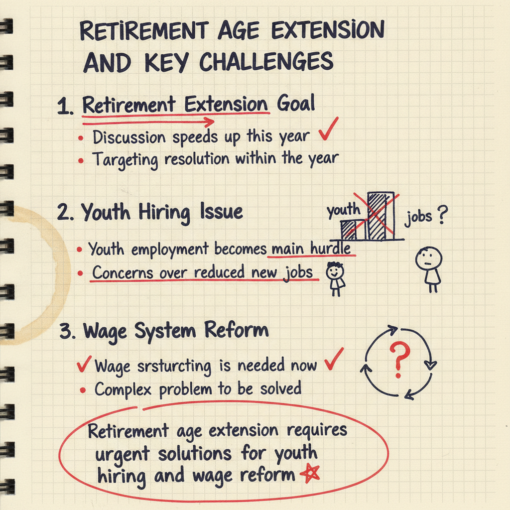
10 정년연장 연내 추진과 청년 채용 및 임금 개편 과제핵심 내용: 정년연장을 연내에 처리하기 위한 논의가 속도를 내고 있습니다. 하지만 정년연장 추진 과정에서 청년 채용 축소 우려와 임금 개편이 해결해야 할 주요 난제로 떠올랐습니다.
추진 배경: 정부 및 관련 노동 정책 논의 기구를 중심으로 정년연장 법안의 연내 처리를목표로 협의를 가속화하고 있습니다.
시사점: 정년연장이 청년층의 신규 채용 감소로 이어지지 않도록 세대 간 상생 도모와 합리적인 임금체계 개편안을 조속히 마련해야 합니다.
10 정년연장 연내 추진과 청년 채용 및 임금 개편 과제핵심 내용: 정년연장을 연내에 처리하기 위한 논의가 속도를 내고 있습니다. 다만 청년 채용 문제와 임금 개편이 해결해야 할 주요 난제로 떠올랐습니다.
추진 배경: 정년연장 논의가 연내 처리를 목표로 신속하게 진행되고 있습니다. 이에 따른 고용 및 임금 구조의 변화가 필요한 상황입니다.
시사점: 정년연장 추진 시 청년 일자리 축소 우려를 해소하는 방안이 마련되어야 합니다. 또한 제도 연착륙을 위해 합리적인 임금체계 개편이 선행되어야 합니다.
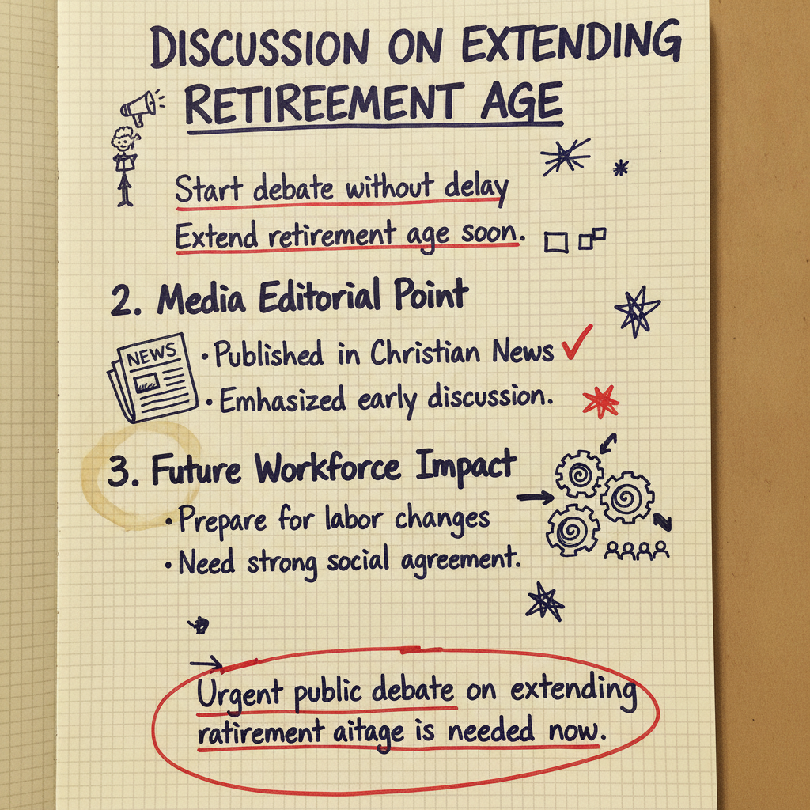
11 정년 연장 논의의 조속한 공론화 필요성핵심 내용: 크리스찬뉴스 논설을 통해 정년 연장 논의를 조속히 시작해야 한다고 강조했습니다. 더 늦기 전에 정년 연장을 공론화해야 한다고 주장했습니다.
추진 배경: 정년 연장에 대한 사회적 논의 필요성이 점차 커지고 있습니다. 이에 따라 더 늦기 전에 논의를 시작해야 한다는 목소리가 나왔습니다.
시사점: 정년 연장은 기업의 인력 운용과 노동 정책 전반에 미치는 영향이 큽니다. 향후 진행될 정책 논의와 사회적 합의 과정에 선제적인 대응이 필요합니다.
11 정년 연장 논의의 조속한 공론화 필요성 제기핵심 내용: 크리스찬뉴스 논설을 통해 정년 연장에 대한 논의를 더 늦기 전에 조속히 공론화해야 한다고 강조했습니다.
추진 배경: 정년 연장 이슈에 대한 사회적 논의 필요성이 강조됨에 따라 해당 논설이 발표되었습니다.
시사점: 정년 연장 문제에 대한 적극적인 공론화와 사회적 논의가 시급히 요구됩니다.
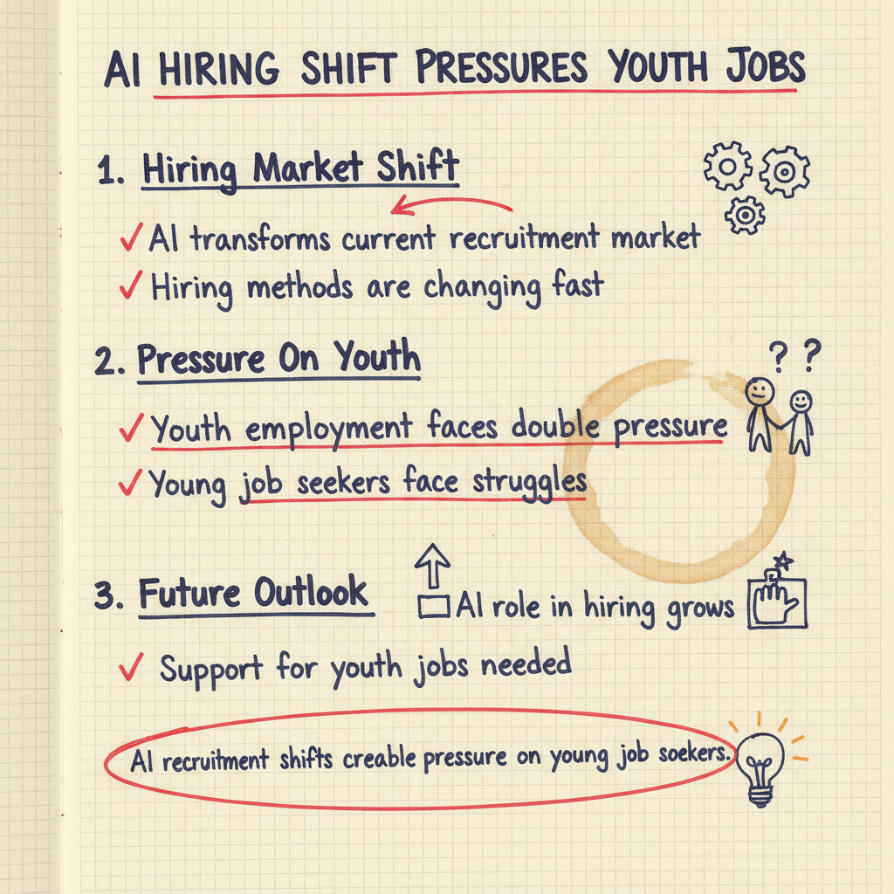
12 AI 채용시장 변화와 청년 일자리의 이중 압박핵심 내용: 인공지능 기술의 도입으로 채용시장이 급변하면서 청년 일자리가 이중 압박을 받고 있습니다.
추진 배경: 채용시장의 변화에 따라 청년층이 직면한 고용 유동성과 일자리 문제를 조명하기 위해 다루어졌습니다.
시사점: 변화하는 AI 채용 환경에 맞춰 청년 구직자를 위한 체계적인 대비가 필요합니다.
12 AI 도입에 따른 채용 시장 변화와 청년 일자리 압박핵심 내용: AI 기술 도입으로 채용 시장이 급변하면서 청년 일자리가 이중 압박을 받고 있습니다.
추진 배경: AI 채용 시장 변화와 청년 구직 난제를 조명한 기획 보도가 이루어졌습니다.
시사점: 변화하는 AI 채용 환경에 맞춰 청년층을 위한 고용 지원책 마련이 필요합니다.
13 국립울진해양과학관 심각한 인력난 직면핵심 내용: 국립울진해양과학관의 인력 부족 문제가 점차 심해지는 상황에 직면했습니다.
추진 배경: 환경일보 보도를 통해 해당 기관의 인력난 심화 사실이 확인되었습니다.
시사점: 지방 소재 공공기관의 인력난 해소를 위한 지원책 마련이 필요합니다.
14 면접 노쇼 대응을 위한 인사 담당자 가이드핵심 내용: 오픈애즈가 면접에 나타나지 않는 지원자로 고민하는 인사 담당자를 위한 대응 가이드를 제시했습니다. 채용 과정에서 발생하는 고스팅 상황에 적절히 대처하는 방법을 다룹니다.
추진 배경: 채용 진행 중 면접 노쇼 및 고스팅 지원자 문제가 지속적으로 발생하여 기업의 채용 업무에 차질을 주고 있습니다. 이에 따라 인사 담당자의 실질적인 대응책 마련이 필요해졌습니다.
시사점: 채용 고스팅에 대한 체계적인 가이드를 활용하면 인사 담당자의 대응 역량을 높일 수 있습니다. 향후 지원자 관리 프로세스를 개선하고 채용 리스크를 줄이는 데 도움이 될 것입니다.
14 면접 노쇼 대응을 위한 인사 담당자 가이드핵심 내용: 오픈애즈가 면접에 나타나지 않는 고스팅 지원자 발생 시 인사 담당자가 적절히 대응할 수 있는 가이드를 제시했습니다.
추진 배경: 채용 과정에서 면접 노쇼 등 채용 고스팅 관련 이슈가 지속적으로 발생함에 따라 마련되었습니다.
시사점: 인사 담당자는 고스팅 상황에 체계적으로 대응하여 채용 과정의 효율성을 확보할 수 있습니다.
15 소아청소년과 병원 52% 4년 내 진료 중단 위기핵심 내용: 소아청소년과 병원의 52%가 4년 이내에 진료 중단 위기에 처해 있습니다. 의료 현장의 인력난과 사법 리스크 해소가 시급한 과제로 떠올랐습니다.
추진 배경: 의료진 부족 문제와 사법적 부담이 지속되면서 병원 운영 리스크가 급증했습니다. 현장 위험 요소가 해결되지 않아 진료 중단 우려가 심화되었습니다.
시사점: 소아 의료 체계의 마비를 막기 위해 최우선으로 인력난을 해결해야 합니다. 의료진에 대한 사법 리스크 완화 등 제도적 지원 조치가 절실합니다.
15 소청과 병원 52% 4년 내 진료 중단 위기핵심 내용: 소청과 병원의 52%가 4년 내 진료 중단 위기에 처해 있습니다. 의료 인력난과 사법 리스크가 주요 원인으로 지적되었습니다.
추진 배경: 현장의 인력 부족과 법적 부담이 해소되지 않으면서 병원 운영의 우려가 가중되었습니다.
시사점: 최우선 과제인 인력난과 사법 리스크를 해결하지 못하면 진료 중단 사태가 현실화될 수 있습니다.
16 울진해양과학관 잦은 채용과 퇴직으로 전문성 약화 우려핵심 내용: 울진해양과학관에서 채용과 퇴직이 반복되는 악순환이 발생하여 주요 운영 문제로 지적되고 있습니다. 인력의 지속적인 변동으로 인해 해양과학교육의 전문성이 약화될 것이라는 우려가 나오고 있습니다.
추진 배경: 해사신문 보도에 따르면 과학관 내 지속적인 인력 이탈과 재채용 구조가 기관 운영의 안정성을 저하시키고 있습니다.
시사점: 해양과학교육의 전문성과 운영 품질을 유지하기 위해 반복되는 채용 및 퇴직 문제를 해결할 인력 관리 방안 마련이 시급합니다.
16 울진해양과학관 잦은 채용과 퇴직으로 전문성 약화 우려핵심 내용: 울진해양과학관에서 채용과 퇴직이 계속 반복되는 악순환이 발생하고 있습니다. 인력의 지속적인 변동은 과학관 운영의 주요 문제로 지적됩니다.
추진 배경: 인력 이탈이 계속 발생함에 따라 이를 메우기 위한 재채용이 이어지는 구조적 어려움이 원인입니다.
시사점: 잦은 인력 교체는 해양과학교육의 전문성을 떨어뜨릴 우려가 있으므로 근로 환경 개선 및 조직 안정화가 필요합니다.
17 국방위 국감, 한화 경영 참여 및 LIG D&A 내부통제 집중 질의핵심 내용: 국회 국방위원회 국정감사에서 한화의 항공우주산업 경영 참여와 LIG D&A 수주 의혹 관련 내부통제 문제를 집중 질의합니다.
추진 배경: 한화의 항공우주산업 경영 참여 사안과 LIG D&A의 수주 의혹이 주요 이슈로 떠오르며 내부통제 부실 여부가 핵심 쟁점이 되었습니다.
시사점: 이번 국감을 통해 방위산업 관련 주요 기업들의 경영 투명성과 내부통제 체계에 대한 검증이 강화될 것으로 보입니다.
17 국방위 국감, 한화 경영 참여 및 LIG 내부통제 질의 예정핵심 내용: 국방위원회 국정감사에서 한화의 항공우주산업 경영 참여 사안과 LIG D&A의 수주 의혹 관련 내부통제 문제를 집중 질의할 예정입니다.
추진 배경: 한화의 경영 참여 및 LIG D&A 수주 과정을 둘러싼 의혹이 제기됨에 따라 관련 규정과 내부통제 준수 여부가 국감 주요 쟁점으로 떠올랐습니다.
시사점: 방산 및 항공우주 분야 기업 전반의 경영 투명성과 내부통제 시스템 강화 요구가 더욱 거세질 것으로 예상됩니다.
18 공공부문 복지시설의 꼼수 채용과 퇴직금 미지급핵심 내용: 공공부문 복지시설에서 수년간 근무하고도 퇴직금을 받지 못하는 꼼수 채용 사례가 확인되었습니다.
추진 배경: 복지시설 등 공공부문에서 퇴직금 지급을 회피하기 위해 편법적인 채용 방식을 악용한 것으로 파악되었습니다.
시사점: 공공부문 내 부적절한 채용 관행을 점검하고 근로자의 정당한 권리를 보호하기 위한 개선이 필요합니다.
18 공공부문 복지시설의 꼼수 채용과 퇴직금 미지급 문제핵심 내용: 공공부문 복지시설에서 수년간 근무했음에도 꼼수 채용으로 인해 퇴직금을 받지 못하는 사례가 발생했습니다.
추진 배경: 공공부문 내에서도 고용 책임을 회피하고 수당 지급을 줄이려는 편법 채용 관행이 지속되고 있습니다.
시사점: 공공부문 노동자의 권익 보호와 정당한 처우 보장을 위해 채용 구조 개선 조치가 필요합니다.
19 김원준 한인회장 사천 방문 및 우주산업 거점 연결 추진핵심 내용: 김원준 한인회장이 동아시아와 미국의 우주산업 거점을 연결하기 위해 사천을 방문했습니다.
추진 배경: 동아시아 우주항공 허브와 미국 우주산업 중심지를 상호 연결하기 위한 목적으로 진행되었습니다.
시사점: 이번 방문을 통해 동아시아와 미국 간 우주산업 교류 및 거점 연결 협력이 강화될 것으로 예상됩니다.
19 김원준 한인회장 사천 방문 및 한미 우주산업 연결 추진핵심 내용: 김원준 한인회장이 사천을 방문하여 동아시아와 미국의 우주산업 거점 연결을 추진했습니다.
추진 배경: 이번 방문은 동아시아 우주항공 허브와 미국 우주산업 중심지를 직접 잇기 위해 진행되었습니다.
시사점: 동아시아와 미국 간 우주산업 거점이 연결되면 양 지역 우주항공 네트워크가 더 강화될 것입니다.
20 케이엠제약 하반기 생산 및 영업 직군 채용 개시핵심 내용: 케이엠제약이 하반기 채용을 시작하며 생산과 영업 등 주요 직무의 인재를 모집합니다.
추진 배경: 하반기 사업 추진과 현장 인력 강화를 위해 분야별 적격 인자를 확보하고자 합니다.
시사점: 핵심 직무 중심의 인력 채용을 통해 하반기 기업 경쟁력이 강화될 것으로 기대됩니다.
20 케이엠제약 하반기 생산 및 영업 직군 채용핵심 내용: 케이엠제약이 하반기를 맞이하여 생산과 영업 등 주요 직군의 신규 채용을 진행합니다.
추진 배경: 하반기 사업 운영에 필요한 원활한 인력 공급과 조직 역량 강화를 위해 채용을 추진합니다.
시사점: 생산 및 영업 인력 확보를 통해 하반기 기업 경쟁력을 높일 수 있을 것으로 기대됩니다.